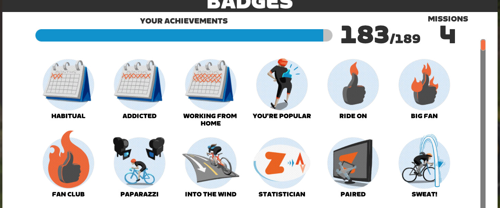
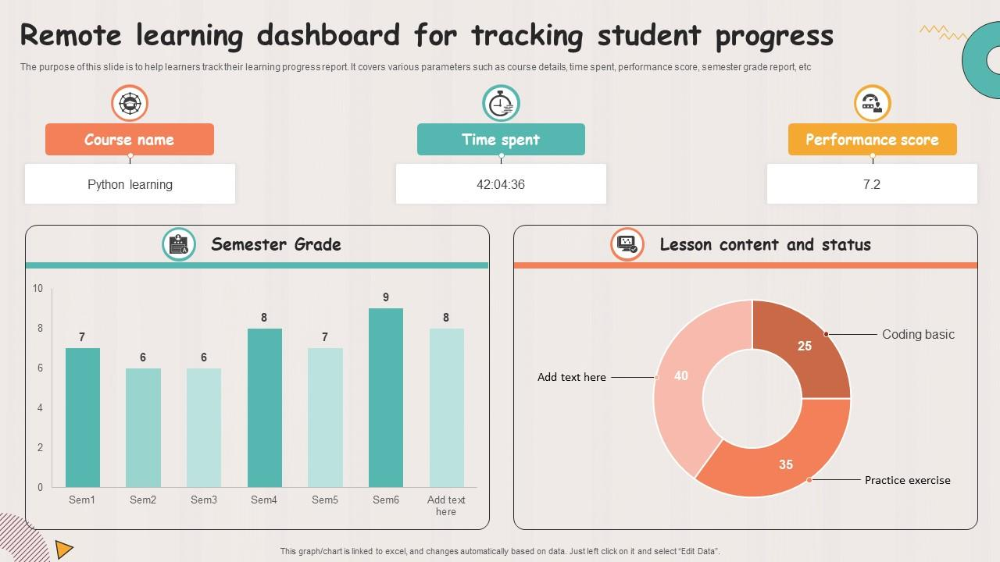
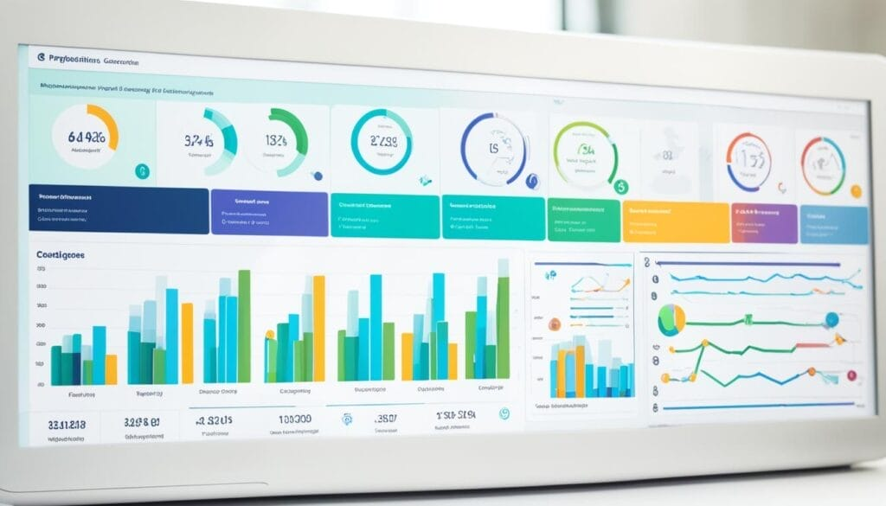

Clases 15 y 16 · Organización, seguimiento y evaluación
de experiencias de aprendizaje gamificadas
Problema: ¿Cómo puedo organizar todas las fases de un proyecto gamificado para asegurar su viabilidad, impacto educativo y correcta implementación?
Problema: ¿Cómo puedo saber si mi alumnado está progresando, participando y aprendiendo durante una experiencia gamificada sin interrumpir el juego?

Tableros visuales con listas y tarjetas. Ideal para organizar fases, asignar tareas y hacer seguimiento del progreso del proyecto gamificado.
Todo en uno: documentación del proyecto, base de datos de estudiantes, seguimiento de misiones y portfolio digital integrado.
Gestión avanzada con líneas de tiempo, dependencias entre tareas y reportes automáticos de progreso del proyecto.
Tableros personalizables con automatizaciones, dashboards y vistas múltiples: Kanban, Gantt y calendario.
Pizarra digital infinita para mapas mentales, diseño de narrativas, brainstorming colaborativo y prototipado visual.
La plataforma más completa: tareas, documentos, chat, metas y tiempo. Perfecta para proyectos gamificados complejos.
Criterios integrados en la narrativa: niveles de maestría, rangos de personaje, insignias de competencia.
FormativaEvidencias organizadas como "diario de aventuras" o "libro de hechizos" del personaje del estudiante.
Formativa + SumativaFeedback integrado en el juego: pistas, vidas, XP, mensajes del personaje guía. El error es parte del aprendizaje.
FormativaLos equipos se evalúan mutuamente con rúbricas simplificadas. Desarrolla pensamiento crítico y metacognición.
FormativaDashboards con datos de participación, tiempo, aciertos y progresión. Permite intervención temprana.
Formativa + SumativaReconocimiento visible de logros. Cada insignia certifica una competencia demostrada, no solo una tarea completada.
Sumativa

| Criterio | Excelente (4) | Bien (3) | En desarrollo (2) |
|---|---|---|---|
| Estructura del tablero | 5 fases completas con tareas y responsables | 4 fases con tareas claras | Fases incompletas |
| Sistema de seguimiento | Herramienta concreta integrada en la narrativa | Herramienta definida con criterios | Herramienta sin criterios |
| Evaluación invisible | Indicador creativo y pedagógicamente justificado | Indicador claro y coherente | Evaluación convencional |
| Presentación oral | Clara, reflexiva, justifica con criterio pedagógico | Clara y completa | Breve o sin reflexión |